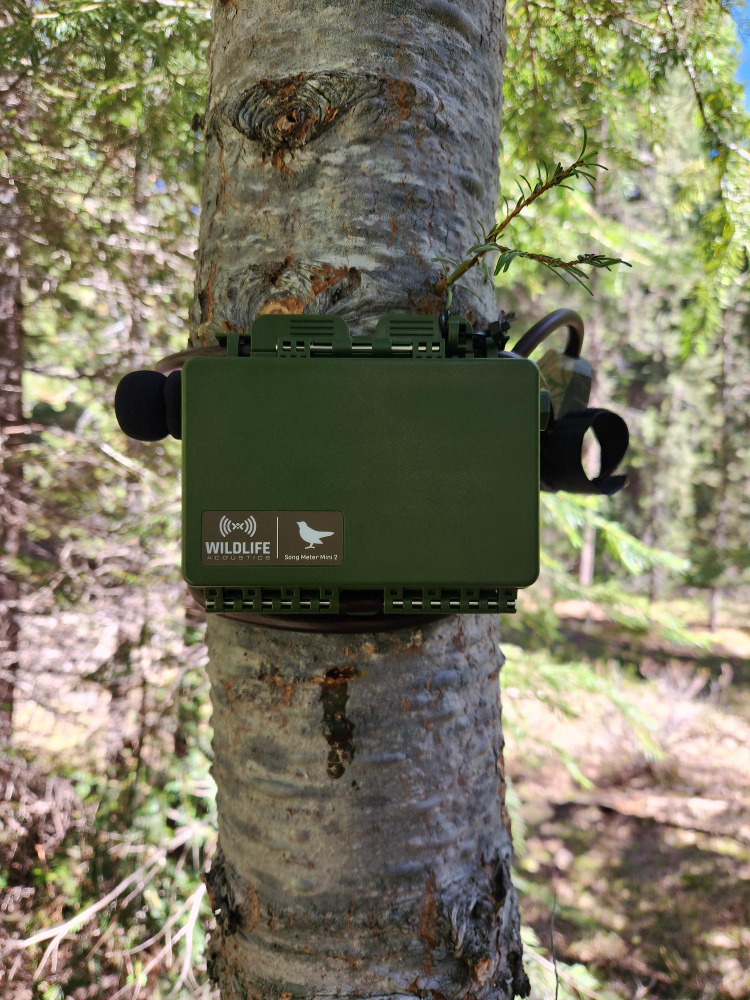

Avian Abundance Estimation with ARUs
Autonomous recording units (ARUs) are small, audio recording devicies often deployed in the field for ecological research. This research examines bird calls recorded on ARUs and aims to assess the efficacy of a variety of statical models that estimate abundance or density from recordings.

Overview
We are examining multiple methods of both data truncation and abundance estimation for data on five Californian avian species collected with autonomous recording units (ARUs) by collaborators in CA. We will compare bird abundance estimates to those obtained through more conventional methods such as point counts and the use of N-mixture models (Royle et al. 2004). The goals of this project are twofold:
1. Conduct an exploratory analysis of the audio reference data and create protocols for future field seasons that collect bird data using ARUs 2. Determine which statistical method best approximates bird abundance as compared to estimates calculated from more traditional methods.Findings so far
This project is currently ongoing on St. Olaf, so check back for updates!